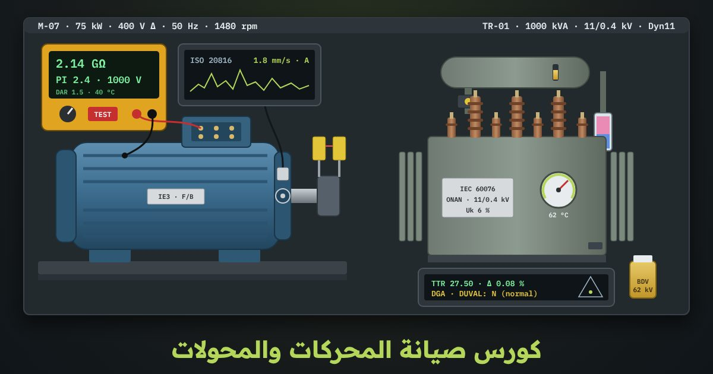

كورس صيانة المحركات والمحولات
كيف تختبر المحرك والمحول بالأجهزة الحقيقية، وتقرأ النتيجة، وتقرّر: يعمل، أو يُراقَب، أو يُصلَح. تبدأ بالسلامة والإقفال وأدوات القياس، ثم الميجر و PI ومقاومة الملفات والمحامل والاهتزاز والمحاذاة بالليزر، ثم تفتيش المحول واختباراته وزيته وتحليل غازاته. الكورس مبني على IEEE 43 و IEC 60034 و ISO 20816 و IEC 60076 و IEC 60599، ومشروعه خطة صيانة لمحركات مصنع واحد ومحوله.
الدرس الأول مفتوح للجميع، والمحاكيان يُفتحان مع الكورس

12 درسًا بالترتيب، وبعد كل درس تمرين على المحاكي
الدروس مكتوبة بالعربية الفصحى، وكل اختبار مشروح خطوة بخطوة بالأرقام. في كل درس أسئلة، وفي الدرس الأخير المشروع والامتحان النهائي.
- الصيانة الكهربية: الأنواع والسلامة وأدوات القياسمفتوح للجميع
- أنواع الصيانة: متى تتدخّل؟
- المعايير: برنامج الصيانة الكهربية
- السلامة أولًا: العزل والإقفال LOTO
- أدوات القياس في ورشة الصيانة
- سجل القياسات: الاتجاه أهم من القراءة الواحدة
- أسئلةأسئلة الدرس
- المحرك الحثي: البناء ولوحة البيانات والأطراف
- بناء المحرك الحثي وأين يتلف
- قراءة لوحة البيانات
- حسابات من لوحة البيانات
- التوصيل نجمة أو دلتا في علبة الأطراف
- تحديد أطراف الملفات المجهولة
- محاكياقرأ لوحة بيانات الضاغط C-201…
- أسئلةأسئلة الدرس
- اختبار مقاومة العزل: الميجر و PI و DAR
- ماذا يقيس الميجر؟ وبأي جهد؟
- خطوات الاختبار والتوصيل
- التصحيح إلى 40 °C والحد الأدنى
- مؤشر الاستقطاب PI ونسبة DAR
- أمثلة من المصنع والقرار
- محاكيصِل الميجر بالملفات والجسم، واختر 500 V…
- أسئلةأسئلة الدرس
- اختبار الملفات: المقاومة والاتزان والقصر
- لماذا نقيس مقاومة الملفات؟
- خطوات القياس والتصحيح للحرارة
- أنماط القراءات في الأعطال
- عدم الاتزان والقرار
- اختبارات مكمّلة وأخطاء شائعة
- محاكيقِس المقاومات الثلاث بالميكرو أوم…
- أسئلةأسئلة الدرس
- المحامل والتزييت
- أنواع المحامل وقراءة رموزها
- عمر المحمل وأسباب تلفه
- كمية الشحم وفترة إعادة التشحيم
- خطوات التشحيم الصحيح
- التشخيص بالصوت والحرارة
- محاكياحسب كمية الشحم وفترته لمحمل 6313 في الضاغط…
- أسئلةأسئلة الدرس
- الاهتزاز والمحاذاة
- قياس الاهتزاز وحدود ISO 20816-3
- قراءات C-201 وتشخيص السبب من الطيف
- القاعدة المرتخية Soft Foot
- المحاذاة بالليزر وحساب الرقائق
- التمدد الحراري والأخطاء الشائعة
- محاكيقِس الاهتزاز عند DE و NDE في الاتجاهات…
- أسئلةأسئلة الدرس
- الحرارة والتيار: الحمل الزائد وعدم اتزان الجهد
- الحرارة عدوّ العزل: فئات العزل وقاعدة العشر درجات
- الحمل الزائد: قِس التيار ولا تكتفِ بحماية القاطع
- خطوات قياس التيار
- عدم اتزان الجهد وتخفيض القدرة وفق NEMA MG…
- الكاميرا الحرارية: ما الذي تقيسه وكيف تحكم
- خطوات المسح
- تحليل تيار المحرك MCSA، والأخطاء الشائعة
- محاكياقرأ صورة حرارية وتيارات الأطوار لـ C-201…
- أسئلةأسئلة الدرس
- تشخيص أعطال المحرك خطوة بخطوة
- طريقة منظّمة: لا تبدأ بفك المحرك
- المحرك لا يدور، أو يطنّ ولا يقلع
- المحرك يسخن، أو يفصل الحماية
- المحرك يهتز أو يصدر ضجيجًا
- القرار: إصلاح، أم إعادة لف، أم تبديل؟
- محاكياعمل على حالات أعطال واقعية بالمقياس المتعدد والكلامب…
- أسئلةأسئلة الدرس
- المحول: البناء والملحقات والتفتيش الدوري
- لوحة بيانات T1 ومعنى رموزها
- الملحقات: ماذا يفعل كل منها؟
- جولة التفتيش الدوري: ماذا ترى وماذا تقرر
- الحرارة والحمل: قراءة OTI و WTI
- بوخهولز والأخطاء الشائعة والسلامة
- محاكيقم بجولة تفتيش حول T1: مستوى الزيت…
- أسئلةأسئلة الدرس
- اختبارات المحول الكهربية
- قبل الاختبار: العزل والترتيب الصحيح
- نسبة التحويل TTR على كل الخطوات
- مقاومة الملفات والتصحيح إلى 75 °C
- العزل IR و PI بين الملفات والأرض
- مجموعة التوصيل وتيار المغنطة والأخطاء الشائعة
- تيار المغنطة
- محاكيأجرِ TTR على كل الخطوات والأطوار…
- أسئلةأسئلة الدرس
- زيت المحول: الجهد الانهياري وتحليل الغازات
- الزيت يقول ما لا تقوله الاختبارات الكهربية…
- خطوات أخذ عينة صحيحة (على نمط IEC 60475)
- الجهد الانهياري BDV وفق IEC 60156
- الرطوبة والحموضة وباقي خصائص الزيت
- تحليل الغازات الذائبة DGA ومثلث دوفال
- متى تستخدم المثلث؟
- القرار: ترشيح، أم تجديد، أم تبديل، أم فصل؟
- محاكيخذ عينة زيت من T1 بالطريقة الصحيحة…
- أسئلةأسئلة الدرس
- المشروع: خطة صيانة لمصنع + الامتحان النهائي
- ابدأ بالأهمية: أي معدّة تتوقف بتوقفها المصنع؟
- مهام المحركات وفتراتها
- مهام المحول T1 وفتراتها
- الاتجاه هو الذي يقرر: من القراءات إلى الأفعال
- الخطة في صفحة واحدة، وقطع الغيار، والمؤشرات
- محاكيابنِ خطة صيانة المصنع…
- أسئلةأسئلة الدرس
- امتحانالامتحان النهائي
الكورس بالأرقام
ماذا ستتعلّم
- تفرّق بين الصيانة الوقائية والتنبؤية والتصحيحية، وتطبّق العزل والإقفال LOTO قبل أي عمل، وتختار أداة القياس المناسبة
- تقرأ لوحة بيانات المحرك، وتحسب تياره وانزلاقه وعزمه، وتحدّد أطراف الملفات وتوصيل النجمة والدلتا
- تختبر العزل بالميجر، وتصحّح القراءة إلى 40 °C، وتحسب مؤشر الاستقطاب PI ونسبة DAR وفق IEEE 43
- تقيس مقاومة الملفات وعدم اتزانها، وتكتشف قصر اللفات والتماس مع الجسم وفتح الطور
- تحسب فترة التشحيم وكميته، وتشخّص المحمل من صوته وحرارته، وتعرف أسباب تلفه
- تقيس الاهتزاز وفق ISO 20816، وتكتشف عدم الاتزان والقاعدة المرتخية، وتضبط المحاذاة بالليزر
- تقرأ صورة الكاميرا الحرارية، وتحسب تخفيض القدرة عند عدم اتزان الجهد، وتحلّل تيار المحرك
- تشخّص أعطال المحرك بطريقة منظّمة، وتقرّر الإصلاح أو إعادة اللف
- تفتّش المحول وملحقاته: مرحّل بوخهولز ومجفف السيليكا جل ومبيّنات الحرارة، وتجري اختبارات TTR والملفات والعزل
- تختبر الجهد الانهياري لزيت المحول، وتفسّر تحليل الغازات الذائبة على مثلث دوفال، وتبني خطة صيانة لمصنع
ورشة صيانة المحركات ومحطة صيانة المحولات: 11 تمرينًا
محرك حقيقي على منضدة الاختبار تقيس عليه بالأجهزة نفسها، ومحول توزيع 1000 kVA تفتّشه وتختبره وتحلّل زيته. كل تمرين مرتبط بدرس، ويُسجَّل إتمامه في تقدّمك.
- لوحة بيانات المحركاقرأ لوحة بيانات محرك حقيقي، واحسب تياره وانزلاقه وعزمه، ثم وصّله نجمة أو دلتا حسب جهد الشبكة
- اختبار العزل بالميجراختر جهد الاختبار، وقِس مقاومة العزل وصحّحها إلى 40 °C، واحسب مؤشر الاستقطاب PI ونسبة DAR، ثم احكم على المحرك وفق IEEE 43
- مقاومة الملفاتقِس مقاومة الملفات الثلاثة بالميكرو أوم، واحسب نسبة عدم الاتزان، واكتشف قصر اللفات أو التماس مع الجسم أو فتح الطور
- المحامل والتشحيماحسب فترة التشحيم وكمية الشحم للمحمل، واستمع إلى صوته وقِس حرارته، ثم حدّد سبب التلف
- الاهتزاز والمحاذاة بالليزرقِس الاهتزاز وقارنه بحدود ISO 20816، وافحص القاعدة المرتخية، ثم اضبط المحاذاة بجهاز الليزر حتى تدخل في السماحية
- الحرارة وعدم اتزان الجهداقرأ صورة الكاميرا الحرارية، واحسب عدم اتزان الجهد وتخفيض القدرة اللازم، وحلّل تيار المحرك
- تشخيص الأعطالمحركات بأعطال حقيقية: لا يدور، أو يسخن، أو يهتز، أو يفصل الحماية. ابحث عن السبب بطريقة منظّمة، وقرّر الإصلاح أو إعادة اللف
- جولة تفتيش المحولافحص مستوى الزيت ومبيّنات الحرارة ومرحّل بوخهولز ومجفف السيليكا جل والتسريبات، وسجّل الملاحظات
- اختبارات المحول الكهربيةاختبر نسبة التحويل TTR ومقاومة الملفات والعزل و PI، وتحقّق من مجموعة التوصيل
- زيت المحول وتحليل الغازاتاختبر الجهد الانهياري BDV للزيت، وضع نتيجة تحليل الغازات الذائبة على مثلث دوفال، وقرّر معالجة الزيت أو تغييره
- خطة صيانة المصنعابنِ خطة صيانة لمحركات المصنع ومحوله: المهام والفترات والقراءات المطلوبة والقرارات
لمن هذا الكورس
- لمهندسي الصيانة الكهربية وفنييها في المصانع ومحطات المياه والمباني
- لمن يستلم محركات ومحولات جديدة أو بعد الإصلاح ويريد أن يعرف ماذا يقيس وكيف يحكم على النتيجة
- لفنيي ورش إعادة اللف الذين يريدون فهم الاختبارات قبل اللف وبعده
- بعد كورس أساسيات الكهرباء والكلاسيك كنترول، وكل اختبار مشروح بالأرقام
قبل أن تسأل
هل أحتاج أجهزة قياس حقيقية؟
لماذا الكورس بالفصحى؟
ما المعايير التي يغطيها؟
هل أحتاج حسابًا؟
هل توجد شهادة؟
جاهز لاختبار أول محرك؟
الدرس الأول مفتوح للجميع، والكورس كله مع المحاكيين يُفتح عند شرائه. ابدأ الآن وتابع بالسرعة التي تناسبك، وتقدّمك محفوظ.